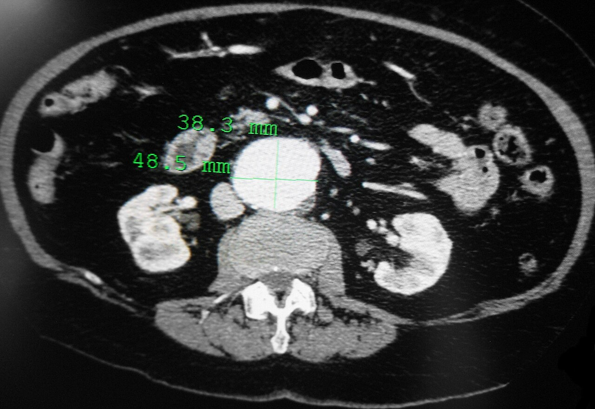

Ficha del catálogo
Aneurisma de aorta abdominal
- Sistema
- Cardiovascular
- Modalidad
- TC
- Región
- Abdomen
- Dificultad
- Intermedio
Es la dilatación focal y permanente de la aorta abdominal que alcanza o supera los 3 cm de diámetro transverso máximo. Se asocia a aterosclerosis, tabaquismo, hipertensión y edad avanzada, y predomina en el segmento infrarrenal. Su importancia radica en el riesgo de rotura, que crece de forma marcada cuando el diámetro supera los 5.5 cm.
Técnica
El ultrasonido abdominal es el método de tamizaje y seguimiento: Se mide el diámetro anteroposterior de pared externa a pared externa en un plano perpendicular al eje del vaso. La angiotomografía con contraste yodado se usa para la planificación quirúrgica o endovascular y ante sospecha de complicación. En pacientes con contraindicación al yodo puede recurrirse a la angiorresonancia.
Qué observar
- Diámetro transverso máximo medido perpendicular al eje del vaso
- Extensión craneocaudal y relación con las arterias renales
- Presencia, grosor y morfología del trombo mural
- Signos de rotura o inestabilidad: Hematoma retroperitoneal, semiluna hiperdensa en el trombo
- Afectación de las arterias iliacas y calidad de los cuellos proximal y distal
- Calcificaciones parietales y su desplazamiento respecto al contorno
Hallazgos
Se identifica una dilatación fusiforme o sacular de la aorta con luz permeable central y trombo mural periférico de densidad intermedia que no realza. Las calcificaciones de la íntima delimitan la pared verdadera y suelen desplazarse hacia afuera. En rotura contenida aparece hematoma retroperitoneal, pérdida del plano graso periaórtico y contorno posterior mal definido adherido al cuerpo vertebral.
Perlas
La medición debe hacerse de pared externa a pared externa y en un plano estrictamente perpendicular al eje del vaso; una aorta tortuosa cortada de manera oblicua genera una elipse que sobreestima el diámetro y puede llevar a indicar una intervención innecesaria.
Diagnóstico diferencial
- Aorta ectásica o tortuosa
- Hay elongación y desviación del trayecto pero el diámetro perpendicular real se mantiene por debajo de 3 cm.
- Disección aórtica con luz falsa trombosada
- Se reconoce un colgajo intimal o un desplazamiento interno de las calcificaciones, no un trombo laminar concéntrico.
- Aneurisma inflamatorio
- Existe un manguito de tejido blando periaórtico que realza y respeta la pared posterior, a menudo con hidronefrosis asociada.
- Fibrosis retroperitoneal
- La aorta no está dilatada y el tejido envuelve además uréteres y vena cava, desplazándolos medialmente.
Simuladores
- Asas intestinales llenas de líquido adyacentes a la aorta en ultrasonido
- Adenopatías retroperitoneales confluentes que rodean el vaso
- Aorta tortuosa cortada oblicuamente que aparenta mayor calibre
Por modalidad
- TC
- Aporta la medición precisa, la extensión, la relación con ramas viscerales y la detección de rotura o fuga.
- US
- Permite tamizaje y seguimiento sin radiación ni contraste, con buena reproducibilidad del diámetro anteroposterior.
Protocolo
Angiotomografía abdominopélvica con cortes finos, fase arterial mediante seguimiento de bolo en aorta y fase tardía si se sospecha fuga. Ante sospecha de rotura se añade una serie sin contraste para identificar sangre hiperdensa. Se reconstruyen planos multiplanares y perpendiculares al eje del vaso para las mediciones.
Clasificación
Se clasifica por morfología en fusiforme o sacular y por localización en suprarrenal, yuxtarrenal e infrarrenal, siendo esta última la más frecuente. El umbral de reparación electiva se sitia habitualmente en 5.5 cm en varones y algo menor en mujeres, o ante un crecimiento rápido documentado.
Errores frecuentes
- Medir en cortes oblicuos y sobreestimar el diámetro
- Medir solo la luz permeable ignorando el trombo mural
- Pasar por alto una rotura contenida por no revisar la serie sin contraste

aorta aneurisma abdomen trombo mural rotura angiotomografía tamizaje